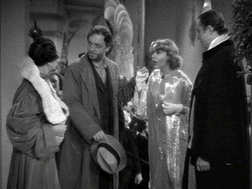

| My
Man Godfrey (SE)/ A, B |
| Criterion/1936/93/FS 1.33/BW |
The quintessential
screwball comedy, My Man Godfrey establishes its cultural and social roots with the
marvelous scavenger hunt opening. Setting the place and times with quick strokes, director Gregory
Le Cava establishes the breathless rhythms and clever dialogue that are hallmarks of Godfrey
from the outset.
 |
| This is mother and mother's protégé.
©Universal |
As part of a black tie
party, Irene Bullock and her sister Alice compete in a scavenger hunt. The challenge of finding a
"forgotten man" leads them to the same shanty city underneath a bridge where they each
try to entice Godfrey, one of the homeless men, to return to the party with them as the last item
to scavenger victory. Godfrey proves more than they bargain for, but Irene's charm wins him over.
Irene convinces him to become the family butler. Godfrey takes charge with a wisdom beyond his
origins, tames the Bullock girls, and becomes indispensable to the family. Irene moons for Godfrey,
Alice baits his every step, as he proves himself more than just any forgotten man.
The
combination of droll William Powell as Godfrey, the forgotten man turned butler, and daffy Carole Lombard, as the
rich girl who makes Godfrey her protégé is wonderful. Powell maintains his dignity under a variety
of comic assaults by the freewheeling blonde Lombard. It’s interesting to note that their
marriage of two years had ended amicably a couple of years before Godfrey was made and Powell
actively campaigned for the casting of Lombard. Happily, their screen chemistry is a gift to cinema
history while nobody gives a second thought to their domestic failure.
The supporting players, like
Eugene Palette, whose voice could easily have guided ships through San Francisco harbor and Alice
Brady at her ditzy best. Palette’s frustrated Papa Bullock keeps the caffeine flowing in every
scene while Brady’s good nature is blissfully resilient. The competition between sisters Irene
and Cornelia Bullock plays like sweet jam on toast. Gail Patrick as older sister Cornelia cool and
conniving and Lombard’s Irene dressed in an armor of innocence. The social conscience, definitely
a heavy vein running through the gold mine of comedy, is part and parcel of the plot. The film
never descends into piety.
Presented as a special edition by the Criterion Collection, My Man
Godfrey includes some short rare outtakes that are treasures. There's also a Lux Radio Theater
adaptation starring Powell and Lombard. Film historian Bob Gilpin delivers a dry scholarly audio
commentary that includes background information about and analysis about the period.
Source elements for the transfer appear to be in very good condition. Some
digital work is evident in the relative cleanliness of the picture and a few scenes are slightly
soft. Resolution is fine enough to catch the gleam in the actors' eyes. Element deterioration
crops up in small doses. Overall contrast is very good. Blacks stand out well. Shadow detail is
preserved in the high key lit segments. Thin mono soundtrack is serviceable.
|
|
|
|

Lady Eve,
The (SE) A,C+

Wonderful classic comedy from writer/director Preston Sturges. Henry Fonda and Barbara Stanwyck
star.

Selections from the Feature Archive include articles on
Akira Kurosawa, Blonde Bimbos,
Frank
Darabont, Steven Culp,
John
Herzfeld or Vietnam: The
Hollywood Pariah, and many more....
The Bitch Brigade

A line-up of lean-lipped
actresses who marched through Hollywood in a high heeled goose step armed with razor sharp
dialogue. Click on the image to read all about them.
 
Elegant DVD portal with news, reviews, links and information
galore.

Home to The American Society of Cinematographers. Includes features from
American Cinematographer Magazine and more...
 Brad Lang continues to add more interesting material to the extensive
collection at Classic
Movies. Everything from actors and actress to your favorite directors is
linked at the site. Brad Lang continues to add more interesting material to the extensive
collection at Classic
Movies. Everything from actors and actress to your favorite directors is
linked at the site.
|